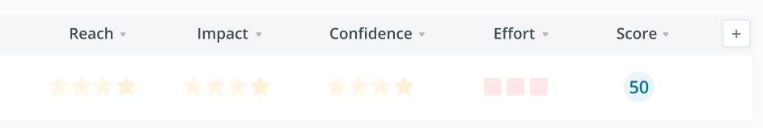
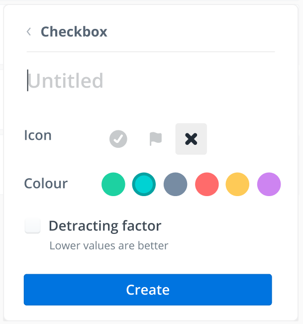
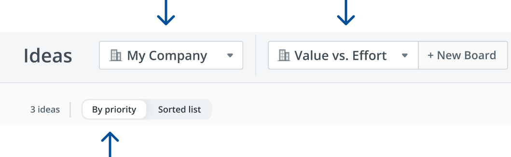
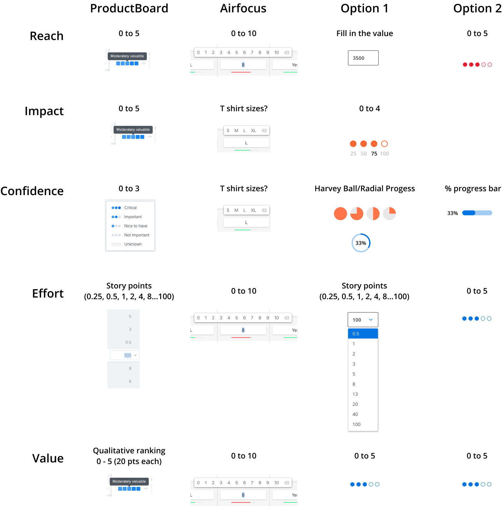
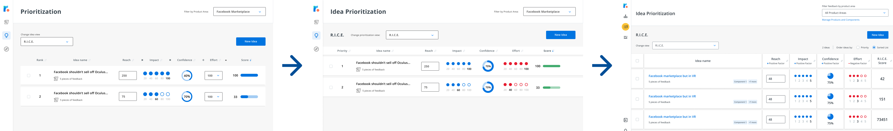

The Situation
Roadmunk is a high-growth startup whose bread and butter offering is a software solution that allows customers to easily and quickly create visually stunning roadmaps. I joined Roadmunk in December 2019 as a Product Designer.
However, at the time the organization was faced with three major problems with the core offering for roadmapping.
- Roadmapping is a monthly if not seasonal ritual, resulting in low user stickiness
- The tech stack upon which roadmapping is built is slow to ship and slow to use
- No defined audience - when you design and build for everyone you design for no one
The combination of these problems results in a life-time value of just 4 years for the average subscriber, and a lot of churn for the business.

Customer feedback are collected, ideas are prioritized before they are promoted into features.
The business hypothesis was the following - introduce a new product area that will be tailored specifically towards the workflow of Product Managers, that's built upon a modern techstack. The solution will assist Product Managers in their day to day duties, increase stickiness, and reduce churn. This was named the "Feedback and Idea Management" project team, or "FIM" for short. 8 months after the project kickstarted, I joined the team.
Problems Discovered from Research
One of the first things we did after joining the team was to conduct a series of 1-hour user research sessions. The participants composed of both existing and prospective customers. The format included semi-structured interviews as well as usability testing sessions to evaluate both product-market fit, as well as the ease of use of the prototype. Up until this point, the product prototype had not been evaluated against live users.

The prototype that was tested with existing and prospective users
Here's what we learned,
- Actual experience ≠ user mental model
The values assigned to the factors also change depending which view the user is on. There is no source of truth across teams and factors.
In addition, product managers familiar with the RICE framework know that the RICE score is calculated as Reach x Impact x Confidence ÷ Effort. The way the score is calculated here doesn't follow said formula.

- Factor customizability is confusing and detracts values
The custom factors were far too customizable in areas that provided little value - like being able to tweak the colour and shape of the rating factors. The preset factors also didn’t accurately correlate with the data they were supposed to represent.

- Feature Prioritization requires a lot of complex setup before value is realized
For a user to start finding value in the idea prioritization module, they need to...add the new ideas manually, customize the board to include the factors they need for the prioritization, then assign factor values for each idea individually.
- Connection between factors and score calculation is unclear
It is unclear to the users why certain factors are assigned the values they have. Why do 4 stars and 2 squares equal 67?
- Low discoverability and lack of signifiers
At a glance it is not clear on the page what elements are interactable, and what the different dropdowns represent. Users had trouble finding their way through the app, and what they expected the dropdowns and interactions to be often defied their expectations.

The functions of the dropdowns are unclear at a glance.
The Redesign
Goals
- Align the designed solution with actual user mental models.
- Surface affordances by providing appropriate signifiers to increase discoverability.
- Make the Idea Prioritization module a tool that's usable out of the box instead of requiring setup to realize value.
Cut for time
The project at this stage has been in development for over 8 months, the MVP scope needed to be trimmed due to business needs. The final deadline was set to be right before the start of 2020 Q2 so sales could hit their targets without missing oppportunities for two whole quarters. A large set of "essential" features had to be cut from scope. Iterations post launch were required to bring the product more inline with the customer needs.
A lot of trade offs had to be made to balance a solution that's sellable and usable, while maintaining velocity. 2 work weeks was all I had to redesign the entire module while balancing the need to satisfy both user as well as business goals.
Different options explored
I always design from a moodboard formed from a variety of different sources - competitive analysis, conventional interaction design patterns that users would be familiar with, and other adjacent experiences that may be applicable. In other words, a mishmash of different prototypes are often "frankensteined" together when I design.

Competitive analysis of the boards and factors.

Options explored for different ways of representing factors.
What we ultimately launched
The final iteration below went through several rounds of internal stakeholder feedback, while taking into consideration the business goals and technical constraints. User feedback was also incorporated to land on the final iteration. The total redesign from research to launch were completed under 3 months.

Different iterations the page went through before landing on the final design

What we ultimately launch & what is live today.
Continued Design and Development After Launch
A mix of quantitative and qualitative feedback was gathered to determine where to take the product area post-launch. Quantitative feedback was managed by the PM assigned to the project to monitor usage - we learned that the manual entry created barriers for adoption.
Qualitative feedback was gathered through multiple forms - surveys from Chameleon as well as user research to gather testimonials on what needed to change to increase adoption. I ran a mix of moderated (Zoom & Figma) and unmoderated (using Maze.design) usability testing sessions to evaluate desirability and usability of new features.

Moderated usability tests.

Unmoderated tests done through Maze.design
- Custom scoring
Only preset boards (RICE and Value vs Effort) had scores attached to them at the time of launch. The ability to support scoring on custom views was cut for scope before the MVP deadline. I worked with the product and engineering team to ship, test, and launch the custom scoring feature right after the launch of the MVP. I tested low-fidelity prototypes of the feature with 17 different users (mix of moderated and unmoderated tests) prior to handing off the designs to engineering — all of which were completed under 4 weeks.
- Import ideas through CSV
From quantitative data we noticed a low usage and adoption rate for idea prioritization after the product area was launched. User research uncovered one of the reasons why there was low adoption rate - user data already lived elsewhere, and since manual entry was the only way to add the data into the system, the amount of effort required for migration wasn't worth the value added. WIP, assets to come.
Collaboration with other teams
WIP placeholder.
Takeaways
Strong collaboration with product and engineering leads to focus and success
Despite the timeline challenges and problems the project faced, a lot focus was put into relationship building with both product and engineering to ensure our goals are aligned. Devs and PMs were involved whenever possible in usability testing calls to build empathy for the user.
Build and ship in increments, embrace bias to action
Scope is negotiable but the minimum amount of value the product needs to deliver to satisfy customer needs are not. One of the biggest
Test early and often
Get insights early on while exploring different options to derisk presented solutions. This allows teams, not just designers to be more confident and knowledgeable. Removing ambiguity is key to shipping quickly.